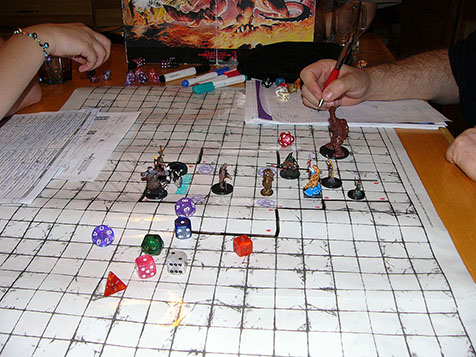

Descrizione
Chi siamo
Nerdbook è un servizio di rete sociale lanciato il 15 marzo 2015, ed è posseduto e gestito dalla società Nerdbook s.p.a., basato su una piattaforma software scritta in vari linguaggi di programmazione. Il sito, fondato a Cagliari in Italia da Caio Sempronio, Mario Rossi, Pasquale Bianchi e Lello Ortu, era originariamente stato progettato esclusivamente per gli studenti dell'Università di Cagliari, ma fu presto aperto anche agli studenti di altre scuole della zona di Cagliari.

Storia
Nato inizialmente come Blog per la condivisione di interessi si è presto tramutato in un social network grazie ai tanti utenti che settimanalmente si recavano a commentare sul blog.
Futuro
Per il futuro speriamo di raccogliere utenti da ogni parte del mondo, in modo da poter condividere la nostra filosofia con più persone possibili
Di cosa ci occupiamo
Questa comunità nasce con lo scopo di aiutarti a trovare altre persone che si interessano degli stessi argomenti che ti appassionano.In modo completamente gratuito. Conoscendo, molto bene, le difficoltà di ammalgamere le persone nei luoghi comuni: come scuole, università o luoghi di lavoro. Vogliamo dare la possibilità di incontrarvi o scambiarvi idee in modo semplice.
Interessi
Vogliamo darvi la possibilità di creare gruppi per condividere: i vostri pensieri vostre collezioni, giochi, foto, programmi e tutto quello che pensiate possa interessare alla nostra comunità
Attività
Con il passare del tempo ci siamo occupati anche di organizzare eventi con lo scopo di ragruppare i nostri utenti e far conoscere anche da esterni la nostra rete sociale.